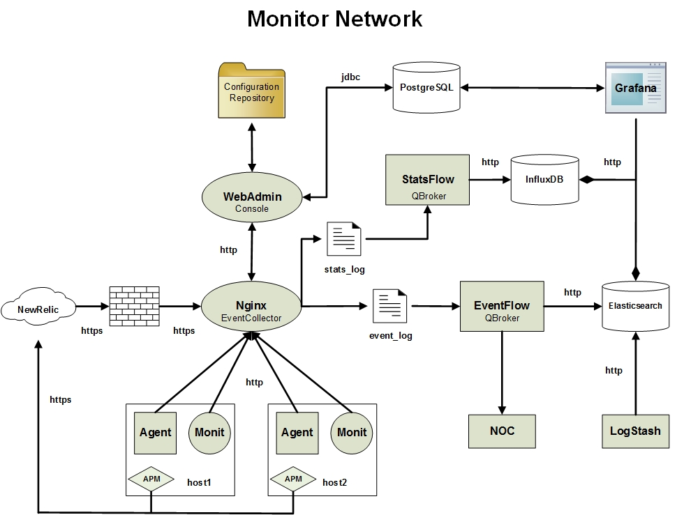
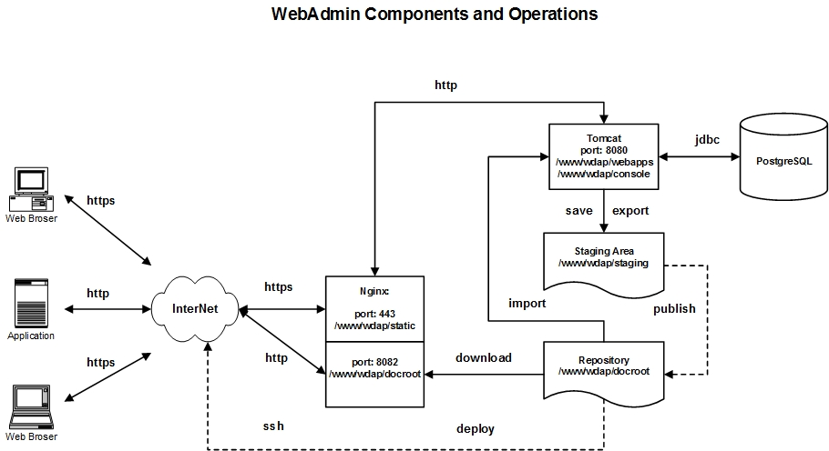
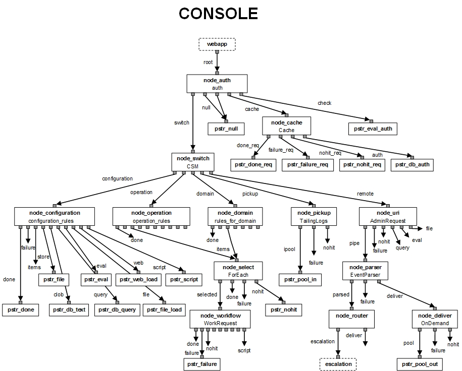

WebAdmin is a web application powered by QBroker at the middle tier and RDBMS database at the backend. With Javascript running at the client side, together they provide a service of admin console for various applications. The middle tier is workflow based. So it is very easy to be customized with various workflows to support different applications. Currently, WebAdmin supports MonitorAgent, QBroker Flow, JMS Browser and WebShell, etc. With WebAdmin, users are able to configure/deploy/start/stop various applications.
WebAdmin is a console service for users to manage various applications. It consists of five subsystems, QBroker, Content Tree, Database, Tomcat and Nginx. Before getting into the details, let us look at an example that WebAdmin is used to manage configurations and operations for MonitorAgent, EventFlow and StatsFlow as a part of a Monitor Network:
where various monitor agents are sending metrics or notifications to some centralized event collectors either on premises or on cloud via http or https. Nginx is used on premises to log metrics and notifications to stats_log and event_log, respectively. Two instances of QBroker Flow pick up data from logs and process them with a bunch of alerting rules. Eventually all the data are stored to either InfluxDB or Elasticsearch for visualizations and further analyses. Grafana is the tool for end users to view and analyze the monitor metrics and notifications. WebAdmin is the management console for those QBroker Flows and MonitorAgents on various hosts.
Even though WebAdmin Console can be owned by any user and deployed at any where, here we focus on the standard deployment. In the standard deployment, it is owned by qbadm and homed at /www/wdap. As shown in the following diagram, there are five subsystems in WebAdmin Console. The first subsystem is an instance of QBroker message flow. The second is an instance of RDBMS database storing all configurations. The next is the Tomcat servlet engine hosting the webapp for the WebAdmin Console. Then it is the Nginx that plays multiple roles, such as the frontend of the webapp, the event collector and the web server for the static content and the configuration files of the repository. The last is the content tree which includes the directories for webapps, javascripts for Webadmin Console, the repository for configurations and the staging area. The content tree is homed at /www/wdap. Here is the conceptual diagram:
WebAdmin's middle tier is powered by QBroker Flow running inside a Java WebApp container. QBroker is a message flow based application. It is very flexible and easy to be confgiured to fit most of the needs. Here is the diagram of the message flow for WebAdmin Console:
To add a new feature, for example, you just need to add new nodes or modify the existing nodes. There is no need to write new codes in most cases.
The installation of QBroker is simple. If your box has web access to https://yannanlu.github.io. It will be really simple. You just need to login on the box and run the followinig command to have it installed:
wget -O - https://yannanlu.github.io/misc/installQB.sh | sudo bashIn some cases, the web access to https://yannanlu.github.io may not be allowed. So you will have to download the tar ball and the installation script from https://yannanlu.github.io. Then you need to copy them to the box for the installation. Here is the procedure with the step-by-step info:
wget --no-check-certificate https://75.131.197.149/qbroker.tgz wget https://yannanlu.github.io/misc/installQB.sh
sudo bash ./installQB.sh .
WebAdmin Console is a web application. It requires a content tree just like a regular web site. The content tree contains the configuration repository for all the managed applications, the staging area for the working copies and the repository for webapps. Each repository of WebAdmin has its own content tree. Therefore, the first task is to set up the content tree.
It is easy to set up the content tree from scratch. Before you start the work, please make sure the hosting boxes are of the Unix platform. Here we assume that there is only one box to host the WebAdmin. In order to manage the configurations for various applications, it is also required the user accounts and groups for each applications. The installation of QBroker in the previous step is supposed to create the user account for qbadm:qb already. If your box has web access to https://yannanlu.github.io. You just need to login on the box and run the followinig command to have it installed:
wget -O - https://yannanlu.github.io/misc/installWdap.sh | sudo bash
In some cases, the web access to https://yannanlu.github.io may not be allowed. So you will have to download the tar ball and the installation script from https://yannanlu.github.io. Then you can copy them to the box for the installation. Here is the step-by-step tasks:
wget --no-check-certificate https://75.131.197.149/wdap.tgz wget https://yannanlu.github.io/misc/installWdap.sh
sudo bash ./installWdap.sh .
In the content tree, there are some configuration files for customizations. Before going through them, let us get familliar with the layout of the content tree.
| Path | Owner | Group | Permission | Description |
|---|---|---|---|---|
| /www/wdap | qbadm | qb | 2775 | home directory of the repository |
| /www/wdap/bin | qbadm | qb | 2775 | directory for scripts and utilities |
| /www/wdap/bin/deploy.sh | qbadm | qb | 0775 | shell script for deployment |
| /www/wdap/bin/publish.sh | qbadm | qb | 0775 | shell script for publishment |
| /www/wdap/bin/new_application_dir.sh | qbadm | qb | 0775 | shell script for creating new applications |
| /www/wdap/bin/new_service_dir.sh | qbadm | qb | 0775 | shell script for creating new services |
| /www/wdap/bin/launch.exp | qbadm | qb | 0775 | expect script for launching apps |
| /www/wdap/bin/push.exp | qbadm | qb | 0775 | expect script for pushing content |
| /www/wdap/bin/mrsync.exp | qbadm | qb | 0775 | expect script for rsync a group of content |
| /www/wdap/bin/rsync_wrapper.exp | qbadm | qb | 0775 | expect script of rsync wrapper |
| /www/wdap/bin/scp_wrapper.exp | qbadm | qb | 0775 | expect script of scp wrapper |
| /www/wdap/bin/ssh_wrapper.exp | qbadm | qb | 0775 | expect script of ssh wrapper |
| /www/wdap/bin/sudo_wrapper.exp | qbadm | qb | 0775 | expect script of sudo wrapper |
| /www/wdap/cfg | root | qb | 0755 | directory for configureation file |
| /www/wdap/cfg/users.pw | root | nginx | 0640 | password file for web access to the configuration repository |
| /www/wdap/cfg/pm.json | qbadm | qb | 0664 | property file for deployment |
| /www/wdap/cfg/pub.json | qbadm | qb | 0664 | property file for publishing |
| /www/wdap/cfg/host.lst | qbadm | qb | 0664 | host list for webadmin cluster |
| /www/wdap/incoming | qbadm | qb | 2775 | directory of incoming for uploads |
| /www/wdap/console | qbadm | qb | 2775 | directory of configuration files for WebAdmin Console |
| /www/wdap/examples | qbadm | qb | 0664 | directory of examples for various DB schemas and workflow configurations |
| /www/wdap/examples/oracle | qbadm | qb | 0664 | directory for Oracle schema and workflow configurations |
| /www/wdap/examples/mysql | qbadm | qb | 0664 | directory for MySQL schema and workflow configurations |
| /www/wdap/examples/postgresql | qbadm | qb | 0664 | directory for PostgreSQL schema and workflow configurations |
| /www/wdap/static | qbadm | qb | 2775 | docroot for static content |
| /www/wdap/static/console | qbadm | qb | 0775 | directory of html pages for WebAdmin |
| /www/wdap/static/cfg | qbadm | qb | 0775 | directory of configuration javascripts for WebAdmin |
| /www/wdap/static/docs | qbadm | qb | 0775 | online documentations for WebAdmin |
| /www/wdap/static/lib | qbadm | qb | 0775 | directory of javascript libs for WebAdmin |
| /www/wdap/static/jtmp | qbadm | qb | 0775 | directory of JSON templates for WebAdmin |
| /www/wdap/static/images | qbadm | qb | 0775 | directory of images for WebAdmin |
| /www/wdap/docroot | qbadm | qb | 2775 | docroot of configuration repository for all applications |
| /www/wdap/docroot/console | qbadm | qb | 2775 | directory for WebAdmin Console's configurations |
| /www/wdap/docroot/console/WebAdmin | qbadm | qb | 2775 | directory for WebAdmin |
| /www/wdap/docroot/console/WebAdmin/console.json | qbadm | qb | 0660 | configuration json file for WebAdmin |
| /www/wdap/docroot/console/WebAdmin/host.lst | qbadm | qb | 0664 | host list for WebAdmin |
| /www/wdap/docroot/console/WebAmin/cfg | qbadm | qb | 2775 | directory of inidividual configuration files for WebAdmin |
| /www/wdap/docroot/agent | qbadm | qb | 2775 | directory for Monitor Agent's configurations |
| /www/wdap/docroot/flow | qbadm | qb | 2775 | directory for Message Flow's configurations |
| /www/wdap/staging | qbadm | qb | 2775 | staging area for all applications |
| /www/wdap/staging/.default | qbadm | qb | 2775 | directory for the templates of the default application |
| /www/wdap/staging/.default/cfg | qbadm | qb | 2775 | directory of inidividual configuration files for the default application |
| /www/wdap/staging/.type | qbadm | qb | 2775 | directory of templates for existing object types |
| /www/wdap/webapps | qbadm | qb | 2755 | directory of webapps for webadmin |
| /www/wdap/webapps/broker | qbadm | qb | 2755 | deployment for webapps of broker |
For an application, like Agent, there are at least 4 copies of the configuration files. The first copy is the local copy on the application machines. The second copy is in the repository, ie, /www/wdap/docroot. The third one is in the database. The fourth one is in the staging area as the working copy. When a user opens a configuration file, WebAdmin Console retrieves it from the database. Once changes are made to the file and saved, WebAdmin Console saves the changes to both the database and the staging area. If the user tries to preview the file, the console picks up the copy on the staging area. The changes can be published to the repository via the publish button. The version on the repository can be deployed to the boxes where the application runs.
WebAdmin stores everything into a database and retrieves them from the database upon requests. The database is the subsystem on the domain level. Multiple repositories on the same doamin will share the same database. Even though WebAdmin supports other databases, like MySQL or Oracle, the standard deployment requires PostgreSQL database. In most cases, there is no need for you to install and configure the database by yourself. The DBAs are supposed to take care of those tasks. Most likely, the database has already been fully functional. You will just need to have your WebAdmin Console and the repository point to it. In case there is no existing database instance ready for you, you have to install the database with either yum on Centos or apt-get on Ubuntu. Then you can load the schema by following the instructions below:
For PostgreSQL, you need to create the user account and database after the installation. After switch to the owner of postgres, you can run the following command for the task:
psql > create user qbdba with password 'xxxx'; > create database qbrokerdb owner qbdba template template1; > \qwhere you need to replace xxxx with the password for qbdba.
Once the account is created, you can login as qbdba to load the table schema:
psql -U qbdba -h localhost -f /www/wdap/examples/postgresql/schema.sql qbrokerdbwhere it assumes the database is running on the same box as WebAdmin Console does. You will be prompted for password on the user of qbdba.
For MySQL, you need to create the user account and database after the installation.
mysql -u root -pxxxx > create database qbrokerdb; > create user 'qbdba'@localhost identified by 'yyyy'; > grant all on qbroker.* to 'qbdba'; > exitwhere you need to replace xxxx with the password for MySQL root account. For yyyy, you need to replace it as the password for qbdba. Once the account is created, you can login as qbdba to load the table schema:
cat /www/wdap/examples/mysql/schema.sql | mysql -u qbdba -pyyyy qbrokerdbwhere yyyy is the passwrod for qbdba. It also assumes the database is running on the same box as WebAdmin Console.
For Oracle, you need to ask DBAs to create the accounts with proper roles granted. Here is the script for the task:
-- create schema for qb_owner and qb_user on Oracle create user qb_owner identified by xxxx; grant connect, resource to qb_owner; create tablespace qbtbspc default storage (initial 40960 next 40960 minextents 1 maxextents 505 pctincrease 0) datafile 'path_to_data_dir/qbtbspc_01.dbf' size 150M; alter user qb_owner default tablespace qbtbspc; create user qb_user identified by yyyy; grant connect, resource to qb_user;where you need to replace xxxx and yyyy with the real passwords for the users and path_to_data_dir with the real path for the data files.
Once the users are created, you should be able to login on the DB to create the schema for qb_owner. The schema is stored in the content tree: /www/wdap/examples/oracle/schema.sql.
After the database and schema are ready, you should have the access info. The next is to update WebAdmin Console configuration so that it points to the right database. It will be covered in the section of Tomcat.
The core of WebAdmin Console is a Java web application which can run inside any standard Java web application container. In the standard deployment of WebAdmin, Tomcat web server has been chosen as the servlet engine. The easiest way to install Tomcat on Linux is to use either yum for Centos or apt-get for Ubuntu.
Since Tomcat is the container for the WebAmin Console, it should run as the user of qbadm. Please make sure the instance of Tomcat starts as the user of qbadm. It is kind of tricky to change the user of the Tomcat instance. Here is the step-by-step instructions for Ubuntu:
sudo service tomcat stop
sudo rm -fr /usr/share/tomcat/temp/* sudo rm -fr /usr/share/tomcat/work/Catalina sudo rm -fr /var/log/tomcat/* sudo chmod g+w /usr/share/tomcat/temp sudo chmod g+w /usr/share/tomcat/work sudo chmod g+w /var/log/tomcat
TOMCAT_USER="qbadm"
sudo service tomcat startTomcat instance should be running as qbadm.
For Centos, it should be similar except for the default setting in /etc/sysconfig/tomcat. But for RHEL 7, the service is managed by systemd. Here is the steps to change the user for Tomcat:
sudo systemctl stop tomcat
sudo rm -fr /usr/share/tomcat/temp/* sudo rm -fr /usr/share/tomcat/work/Catalina sudo rm -fr /var/log/tomcat/* sudo chmod g+w /usr/share/tomcat/temp sudo chmod g+w /usr/share/tomcat/work sudo chmod g+w /var/log/tomcat
echo -e "[Service]\nUser=qbadm" > /tmp/custom-user.conf sudo mkdir -p /etc/systemd/system/tomcat.service.d sudo cp /tmp/custom-user.conf /etc/systemd/system/tomcat.service.d sudo systemctl daemon-reload rm -f /tmp/custom-user.conf
sudo systemctl start tomcatTomcat instance should be running as qbadm.
Once Tomcat is installed, its configureation folder would probably be /etc/tomcat. If not, check the folder of tomcat7 or tomcat8 under /etc or find out its location. Here we assume the configuration folder for installed Tomcat is /etc/tomcat. Run the following command to copy the configuration file for the webamin webapp to its configuration folder:
sudo cp /www/wdap/examples/broker.xml /etc/tomcat/Catalina/localhost
In case the configuration folder is not /etc/tomcat, make the necessary adjustment in the command line.
As the webapp container, Tomcat is going to host WebAdmin Console as a Java application. We need to make sure WebAdmin Console is well configured before to restart Tomcat. Since database has been installed and configured in the previous step, we just need to choose the right set of configureation files for the database. Assuming PostgreSQL is the database for WebAdmin Console, here are the steps to set up configurations:
sudo cp /www/wdap/examples/postgresql/WebAdmin/cfg/* /www/wdap/console sudo cp /www/wdap/examples/postgresql/jaas.conf /www/wdap/console sudo chown qbadm:qb /www/wdap/console/* sudo chmod g+w /www/wdap/console/*If your DB is either MySQL or Oracle, you should replace postgresql with either mysql or oralce in the copy command lines.
WebAdmin Console also requires users to login for security and accountability. It supports JAAS (Java Authorization and Authentication API). If you have your favorit JAAS plugins, you can use them for your WebAdmin Console. By default, JDBC to the database is used for the JAAS. It means you will have to create user accounts and manager their permissions. If you want to use Single-Sign-On, you should update the file of /www/wdap/console/jaas.conf and also update the file of /www/wdap/webapps/broker/WEB-INF/web.xml for the new value of JAASLogin.
Nginx plays multiple roles for WebAmin Console. First, it is the frontend of web application of Console. With Nginx at the front, it is easy to add SSL protections. Second, Nginx is used to serve configuration files for managed applications. All the configuration files are JSON files in plain text, stored in the repository. Third, Nginx is used to collect POST data from various sources as the gateway for events, metrics and alerts. The easiest way to install Nginx on Linux is to use either yum for Centos or apt-get for Ubuntu.
Once Nginx is installed, its configureation folder would probably be /etc/nginx. If not, make sure you find out its location. Here we assume the configuration folder for installed Nginx is /etc/nginx. Run the following command to copy the configuration file for Nginx to its configuration folder:
sudo cp /www/wdap/examples/localhost.conf /etc/nginx/conf.d/`hostname`.conf
In case the configuration folder is not /etc/nginx, make the necessary adjustment in the command line.
Since Nginx needs to read the password file of /www/wdap/cfg/users.pw, please make sure the group ownership of the file is same as the group of the Nginx process.
This concludes the installation and basic configuration of QBroker, Database, Tomcat, Nginx, and Content tree for a single repository. In case of production, it is recommended to set up a backup repository and WebAdmin instance with replications enabled.
Even though all five subsystems of WebAdmin are ready, we still can not start up WebAdmin Console due to the missing dependencies. As you know, WebAdmin Console runs as the user of qbadm. It will have to have the right to modify the configurations on behalf the owner of other applications. It should also be able to restart the applications on the remote boxes via ssh.
In case to deploy the configuration files to a remote box or restart the application on a remote box, WebAdmin will need the ssh access to the box as the application owner. In order to have the centralized control over the remote access, we do not suggest to use ssh keys for the authentications. The standard deployment is assuming a plain-text password stored in the file of /home/user_login/.ssh/user_login.pw. Therefore, please set up the password file for the user of qbadm as follows:
su - qbadm cd /home/qbadm cd .ssh echo qbadm_password > qbadm.pw chmod go-rwx qbadm.pw exit
where you need to replace qbadm_password with the password for the user of qbadm. If there is no .ssh directory, you can run ssh against the localhost to create it. Please do the similar task for the user of qbadm.
WebAdmin has a component of EventCollector which collects the incoming events from various applications. EventCollector will persist incoming events into the log file, /var/log/nginx/event_log. Please make sure the directory of /var/log/nginx having the right permissions. It should be owned by qbadm:nginx with 2775 permission. EventFlow should also be configured on the box to pick up the events from the log file.
WebAdmin Console requires Expect to run scripts on behalf various users. If there is no Expect installed, you need to have it installed installed. Then please make sure all the expect scripts in /www/wdap/bin have the right path for expect. If they are wrong, please update the first line of the scripts. Here is an example,
#!/usr/bin/expect --where it is assumed the expect locates in /usr/bin.
In the folder of /www/wdap/bin, there are a bunch of symlinks for various unix commands. They are created by the script of installWdap.sh in the section of installation for Content Tree. Please make sure all of them are valid. If any of them errored out during the installation of Content Tree, please have them installed and symlinked with the same name. If you have your favorite Java, you can update the symlink here on java.
Finally, WebAdmin Console is ready to start up. Here are the steps to start up the console:
sudo service tomcat restartIn case of systemd, try:
sudo systemctl restart tomcat
sudo service nginx restartIn case of systemd, try:
sudo systemctl restart nginx
If there is no errors, you should be able to launch the admin console with your web browser pointing to the url of http://your_hostname/console/home.html. The default admin user is qbadm with the password of qBr0ker. Once you are able to login on the WebAdmin Console, you should see a table view on the working pane as follows:
| VIEW_NAME | TAB_NAME | COL_NAME | DESCRIPTION |
|---|---|---|---|
| application | applications | short_name | applications |
| site | sites | site_name | customer sites |
| hostgroup | hostgroups | hostgroup_name | host groups |
| role | roles | role_name | admin roles |
| group | groups | group_name | user groups |
| repository | repositories | repository_name | repositories |
| elink | elinks | elink_name | links for external information |
As we mentioned before, if you are setting up a new domain, the database is almost empty. You will need to use WebAmin Console to create some basic objects, such as the current repository, new sites, applications, etc. First thing first, you need to add your repository to the repository view. Double click on the repository on the working pane to open the repository view. Then click on Create button on the top to add your repository to the view. Here is an example for repository of PANDA:
| REPOSITORY_NAME | URI | PATH | DESCRIPTION |
|---|---|---|---|
| PANDA | http://panda:8082 | /www/wdap | repository for integration team |
This will also add your repository as the first site to the site view. Double click on the name of the newly created repository on the summary view of repository to list all sites in the repository. The default site will be there.
Next you should create a new application, a new role, a new hostgroup or a new user group, etc. The Help button on every view is helpful. It explains each properties on every views. Since Console is used to power WebAdmin Console, you should create Console as the first application and then import WebAdmin as the first service.
Click on the DOMAIN link below the buttons on the working pane. You will see the domain view. Click on application twice on the working pane to open the appication's sumary view. Then click on Create button on the top to add Console as the first application. Here is the detail for Console:
| SHORT_NAME | APPLICATION_NAME | VERSION | Type | VENDOR | URI | REPOSITORY | DESCRIPTION |
|---|---|---|---|---|---|---|---|
| Console | Console | 1.0 | Java | INT | http://your_hostname/docs/application/webadmin.html | /www/wdap/docroot/console | WebAdmin Console |
Next, you need to add the application to the default site. Expand site on the navigation tree on the left pane and click on the site you are working on. The working pane shows an empty table since there is no application added to the site. Click on add button on the top and enter Console into the popup box to add Console to the site. On the working pane, click on the name of newly added application. It leads you to the configuration view of the application. Click on Import button on the top and enter /www/wdap/examples/postgresql/WebAdmin to import WebAdmin service into the repository. The import process will create WebAdmin as a new service for Console. Please select on WebAdmin and click on Modify button to change its URI to http://your_hostname. Click on WebAdmin again or click on Modify button to save the change. Since you have made some changes to the files in /www/wdap/console, please make sure to import the changes back to the DB. Then, please make sure to publish the WebAdmin service. Please switch to the deployment view and create the instance of WebAdmin Console on the box.
As a Java web application, WebAdmin Console heavily relies on the database. In case of the database outage, the WebAdmin Console will not work at all. However, the design of WebAdmin ensures the system will still work in the manual mode. During the database outage or webapps outage, the Console will not be usable. But users can use command line tools to make changes directly to the repository bypassing the database and staging. Once the changes are done, they can be deployed to production via the command line tools also. The only thing to remember is to import all the changes into the database once the admin console is back up. Otherwise, the repository and the database will be out of sync.
The command line deployment is to run /www/wdap/bin/deploy.sh as the owner of the repository. The utility is required by both the synchronous deployment and the asynchronous deployment. Some applications, like Agent, supports the asynchronous deployment. If it is enabled, the asynchronous deployment is good enough as long as the application is running. In fact, Agent will check the repository for new updates every 5 min by default. If they see the new timestamp, they will reload the configuration files automatically. For other applications, like Flow or Console, the synchronous deployment is required. Either way, you do not have to login on each of the boxes to do the task again and again. The command line utility will save your time, especially when you are dealing with clusters with multiple vms.
Here is the procedure to deploy changes asynchronously for Agent:
/www/wdap/bin/deploy.sh -a agent -c your_service
Here is the procedure to deploy changes synchronously for Agent:
/www/wdap/bin/deploy.sh -a agent -c your_service
/www/wdap/bin/push.exp ../host.lst *.json /opt/qbroker/agent
/www/wdap/bin/launch.exp ../host.lst /opt/qbroker/bin/agentctl restart
For other applications, you need to replace -a agent with the -a short_name of the application. The directories should be also replaced by the proper values. Since the changes are made on the repository directly, the versions in the DB and the staging area will be out of sync with those of the repository. Please do remember to import the changes back to the DB once the DB is available again.
WebAdmin Console is an ongoing community project. Anyone is welcomed to participate in it. If you are interested in this project or want to improve WebAdmin Console with your contributions, please contact Yannan Lu.
Here is the our todo list for WebAdmin: